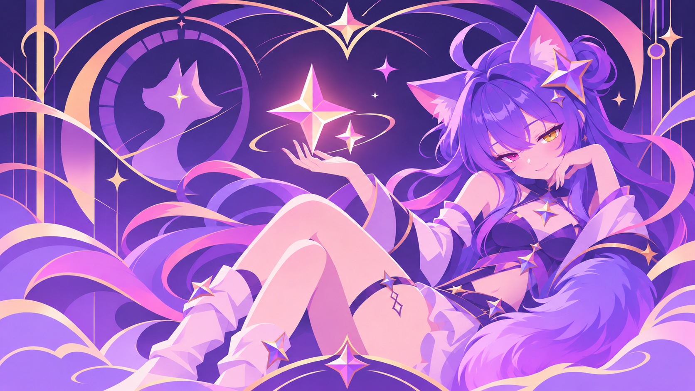

GEMINI · STAR NEKO
Gemini 猫娘工作台

想构建什么？
〈 / 〉探索并理解代码✦构建新功能⌕审查并提出改进▥修复问题与故障
▱ Dream Skin 本地 · main
随便说点什么……
app.ts · 阅读保护示意
// 图片是环境，文字仍然清楚。
const greeting = "Hello, Gemini";
function render() {
return greeting;
}TERMINAL
输入、光标与终端表面保持清晰。
这是视觉示意，不是真实代码运行。
输入、光标与终端表面保持清晰。
这是视觉示意，不是真实代码运行。
轻一点，工作更舒服。
静态壁纸不播放声音、不运行持续动画。插件退出时撤销自有环境层；两个插件独立启停。